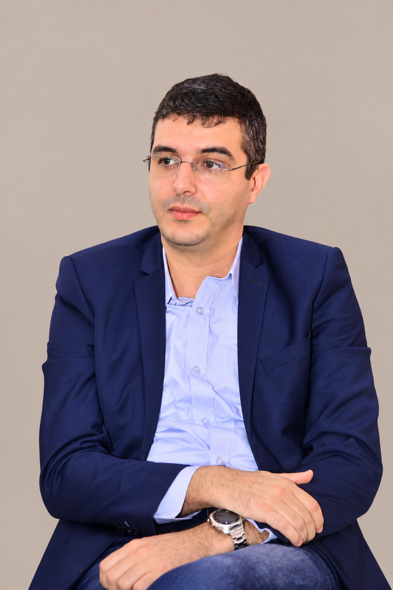

Prof. Abderrahim
Ait Wakrime
Associate Professor, Habilitation to Direct Research (HdR), in Computer Science
Faculty of Sciences, Mohammed V University in Rabat, Morocco.
My academic and professional career combines teaching, scientific research, and participation in collaborative research and development projects.

Welcome to my academic website.
I am an Associate Professor in the Computer Science Department at the Faculty of Sciences, Mohammed V University in Rabat, Morocco.
Professional background
Before joining Mohammed V University, I worked as a research scientist at the Institute for Technological Research Railenium and at Télécom SudParis - Institut Polytechnique de Paris in France. I also served as a Research and Teaching Assistant at the University of Orléans.
Research interests
Software and System Engineering, Critical Systems, Model Transformation, Formal Methods, and Cybersecurity, with applications to transport systems, scientific visualization systems, electronic voting systems, and RFID systems.
Education
I hold a University Habilitation in Computer Science from Mohammed V University and a Ph.D. in Computer Science from the University of Orléans, France. I also hold two Master's degrees, one in Intelligent Systems and Applications and another in Network and Information System Security.
Research & Teaching
Research
Software and Systems Engineering, Critical Systems, Model Transformations, Formal Methods, Cybersecurity
Teaching
Software Engineering, Programming, Web Programming, Formal Methods, Systems and Network Architecture, Databases, Cybersecurity
Academic activities
Research Projects
Participation in national and international collaborative research projects.
International Conferences
Conference organization, scientific committees, and international academic activities.
Master's Program Coordination
Coordinator of the Master's program in Computer Engineering and Systems Security.